Plugin Version: 1.1.11 |
Release Notes
Plugin Version: 1.1.11 |
Release Notes
| New Feature: This functionality is available from ProcessMaker 3.1. |
Overview
The Data Reporting Tools plugin is a flexible and easy to use tool for defining, editing and designing custom reports using report scopes. This plugin allows the user to have a better and easier module that improves the functionalities that currently are present in the Simple Reports plug-in of ProcessMaker.
Requirements
ProcessMaker Compatibility
This plugin is fully compatible with the following ProcessMaker versions:
- v. 3.1.x
Supported Stacks
- Check the Supported Stacks documentation.
It is always recommended to work with the last two versions of browsers.
Concepts
- Report: A report is a representation of a subset of information that have a well-formed format, it´s used in several ways, from informational reviews to decision making inputs. In the context of Processmaker a report is a representation of data generated and stored using our suite.
- Data: ProcessMaker handles data in 3 categories:
- Application Data: This is related to all data regarding to ProcessMaker application (users, roles, groups, permissions, login audit logs, etc).
- Process Data: This is related to all data generated as a part of running BPM engine, the main aspect of this kind of data is that it can be indexed by case. (case number, derivations, dates of execution, times of execution, etc).
- User Data: This is related to all data part of the business logic of the user, this could be static or dynamic that will depend of the user logic (pm tables, case definition/variables, external data, etc).
- Data Range: A data range is a section of the whole data the user wants to use as a source to create a report. A data range is usually a table. A data table can have the following characteristics:
- Can have a different access level created specifically to reporting.
- Can be static or dynamic depending of the sources of data involved. But at the reporting time always is static.
- Data Scope: A data scope is a section of the whole data, similar to Data Range but with the particularity to have a data owner, a data scope should have a data range and a set of permissions and users can access to this information.
- Data Integrity: Refers to data information that cannot be changed by a Reporting Tool.
- Static Information: ProcessMaker considers static information to be all information that does not change in a data range and data scope. Ex. Sales summary January 2015.
- Dynamic Information: ProcessMaker considers dynamic information to be all information that changes in a data range and data scope. Ex. Current Month sales.
- Report Administrator
- Report Designer
- Report User
- Report Manager
- Report Tables / PM Tables: The workflow begins with the creation of Report Tables and PM Tables by the Process Designer (the user with the PM_FACTORY permission assigned). Remember that a Report Scope can access the data stored in all the Report Tables and PM Tables of all processes of the current workspace.
- Report Scope Creation: A Report Scope sets the data boundaries of what can be accessed or not by the Report Designer. At the same time, the Report Designer is able to create multiple instances of a report using a single report scope. In this way, each report can share the same scope, while containing data unique to its case. For instance, summarize all sales made or create the summary of all clients of an specific month. To create a Report Scope the user must be assigned with the Report Administrator permission.
- Report Designing: In this stage the user assigned with the Report Designer permission designs a report from a Report Scope by defining the data, filter conditions and the users that will have access to the report. For instance, the Report Designer might create three instances of an expense report that share the same report scope but contain the expenses of one division each.
- Report View: The users assigned with the Report User permission, have access to view only the final reports assigned to him/her.
- Data of all Report / PM Tables: The first security level includes all the data stored in all Report/PM Tables of all the processes of the current workspace.
- Report Scope: A subset of the data stored in all the Report Tables choosed by the Report Administrator.
- Report Data available for Report Users: This is the subset of data corresponding to the final report restricted to the cases in which the user has participated.
- Report Data available for Report Managers: This is the subset of data corresponding to the final report restricted to the cases of all users to whom the Report Manager is marked as manager, including his/her own cases.
- Search: Enter the name of the Scope in this field. As text is entered, all coincidences are shown in the list below.
- Create: This option opens the Scope Creation window.
- Scope: This column shows the names of the scopes created. This list is sorted in ascending order.
- Scope Description: This column shows the description of each scope.
- Edit: Click on this button to edit the scope configuration.
- Delete: Click on this button to delete the scope. When the confirmation message appears, click on "Yes" to delete the scope. Scopes which are already being used to generate reports can not be deleted. First, the report has to be removed, before deleting the scope.
- Scope Name: A name to identify the scope. Every Report Scope name is unique.
- Scope Description: (Optional) Description of the purpose and content of the report scope.
- Tables: In this section, all the Report / PM Tables of all processes are available to be chosen. Select one or more tables and the fields of each one will be displayed in the "Selected Tables" section. It is recommended to include only the necessary tables in the scope of the report to have just the data that is needed.
- Selected Tables: Select the required columns of each Report / PM Table checking the box next to each column.
- Case Link: The field APP_UID contains the case's unique ID number and the option to create a link to that case. When pressed, the summary of that specific case will be opened.
- Join: If more than one table has been selected the Join section will become available to relate the tables by a column. To create a Join relationship, choose a table in the left, another in the right and select the joining columns. One or more conditions can be added to specify multiple join conditions. The two columns that join the left and right tables do not need to have the same name. However, the joined fields must have compatible data types.

Filters: This section displays the criteria that is used to limit the number of rows of data that are retrieved. One or more filter conditions can be added. In this example, all the records of the report table "Credit Requests" will be selected with the exception of records with the date: "2016-06-07".

- Table: Choose a table. Only tables selected in the first part will be listed.
- Column: Choose a column to apply the criteria.
- Condition: The condition operator to use in the filter expression.
- Value: The condition value. Filter conditions can use values typed manually by the Report Designer or process/system variables defined in the
variablesConfig.inifile. For example, filter by a user id: '00000000000000000000000000000001'.
Edit SQL: Edit the SQL query generated by the wizard. If the SQL query is manually modified then the Wizard will be overridden by the SQL query modification.

- Preview: Show a preview of the records included in the scope. For security reasons, the data displayed will be limited to the three first characters.
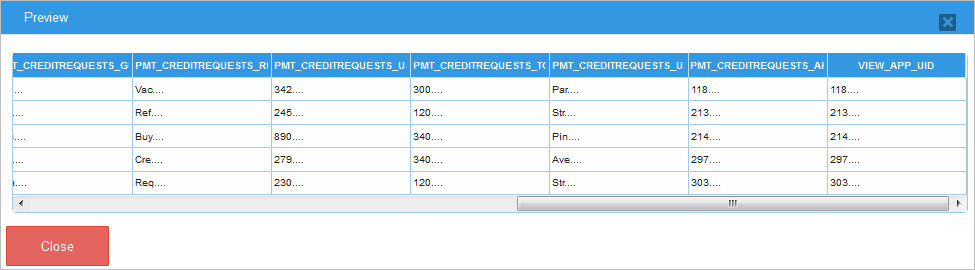 - Report Scope: Choose one of the scopes listed in the dropdown. Remember that only scopes assigned to the current Report Designer will be listed.
- Report Name: Place a name to identify the report. Every report name is unique and validated before saving the report definition.
- Report Description: (Optional) Description of the report.
- Available Columns: Select the columns that will be included in the report by checking the box next to the column name. Only columns of tables selected in the creation of the scope will be displayed at this point. The order can be sorted by dragging and dropping the columns. These fields represent the data that the final user will view in the report.
- Group: Group the information by selecting one column.
- Alias: Aliases can be wrote to make the column names more readable. The column heading will be replaced by these aliases in the final report.
- Filters: In the bottom section, the user can add filter conditions to one or more column(s). Criteria specified in this section are used to generate an SQL WHERE clause and limit the data retrieved.
In the following example, the filter selects records only with a date between "2016-06-01" and "2016-07-31".

- Column: Select a column to apply the filter.

- Condition: Select a comparison operator from the options in the dropdown.
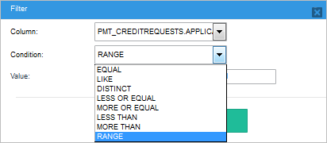 - Value: Depending on the condition, a field or two will be available to set the comparison value. Filter conditions can use values typed manually by the Report Designer or process/system variables defined in the
variablesConfig.inifile. For example, filter by the currently logged user using the variable @@USER_LOGGED.
- Column: Select a column to apply the filter.
- Preview: The user can see a preview of all the definitions and configurations done. For security reasons, the data displayed is limited to the three first characters.
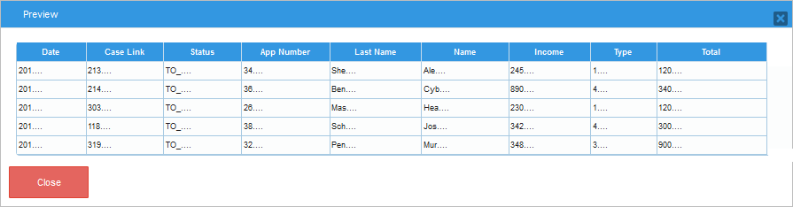 - Manager of: Choose a group of users. The user selected as Report Manager will be able to see the information of the cases where these users have participated.
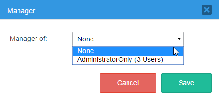 - Grouping: Drag column names from the Data Explorer to the section shown in the image below to group the data by column.
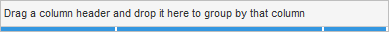
Records can be grouped by one or more columns.
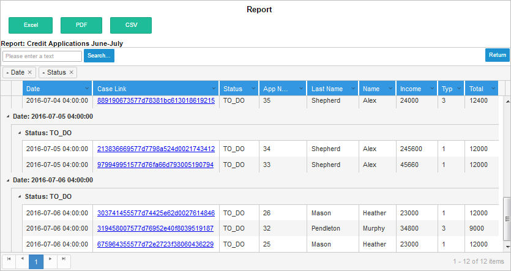
- Ordering: To order the records displayed, make click on the little arrow in the right corner of the column.

- Sorting: Every column has the option to sort in ascending or descending order.
- Columns: By default, all the columns selected in the Report Designer are checked. Unmarked the box next to the column to hide it.
- Filtering: The Report User has the possibility of apply a filter criteria to every column.
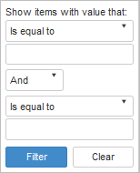
- Exporting: The report view option has the following three exporting options:
- Excel: The output of this type of renderer will be an
.xlsfile that opens in Microsoft Excel or similar.
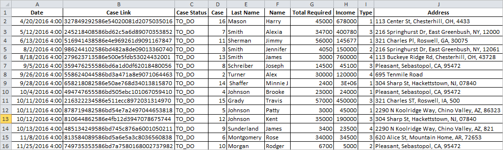 - PDF: Renders a report in Adobe Acrobat Reader format.
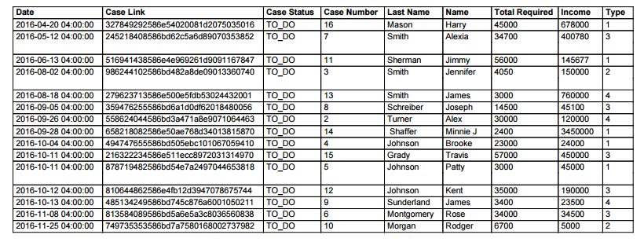 - CSV: Generates a Comma-Separated Value (CSV) file. This file is a flattened representation of the data from the report that will open in a viewing tool associated with
.CSVfile formats.
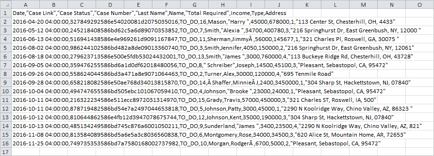
- Excel: The output of this type of renderer will be an
How the feature works
Installation
Login with a user such as "admin" who has the PM_SETUPADVANCE permission in his/her role and then go to ADMIN > Plugins > Enterprise Manager. Either install the Data Reporting Tools plugin by clicking on  Install from File and uploading the plugin file or by clicking on its Install Now button in the list of available plugins.
Install from File and uploading the plugin file or by clicking on its Install Now button in the list of available plugins.
After installing the plugin, make sure that the Data Reporting Tools plugin is
 enabled.
enabled.
Configuration Files
The Data Reporting Tools plug-in uses a set of files to configure its own settings. These files are located at: processmaker/workflow/engine/plugins/DataReportingTools/config. Use a plain text editor to edit their configuration.
Note: To comment in the .ini file use the character ; before the line you want to comment.

whiteTablesList.ini
The whiteTableList.ini allows the user to not only use Report / PM Tables when using the Data Reporting Tools plugin. By placing the name of a table into this file, the Data Reporting Tools Wizard will be able to access to its data to generate scopes and final reports. By default, the whiteTableList.ini file has the following content:
variablesConfig.ini
The variablesConfig.ini file stores the definition of which variables can be used inside the Data Reporting Tools Wizard, this configuration includes System variables and tables fields as custom variables. By default, the variablesConfig.ini file has the following content:
Note: Take into consideration that the value of the variable SYS_LANG is set only when the user selects the language and logs in into ProcessMaker. This variable is not updated when the user changes the language directly in the ProcessMaker URL.
The format to add variables is the following:
skinConfig.ini
The default skin for Data Reporting Tools can be customized at the skinConfig.ini file by replacing path-css in the code of the file, for the path of your css file.
For example:
Report Permissions
When activating the plugin, a set of 4 new ProcessMaker permissions will become available. These set of permissions are used to limit the access and functionalities that users have in the different levels of the security architecture of the plugin.
To assign these permissions, go to Admin, choose the "Users" tab and click on "Roles" to assign these permissions to one or more role. It is possible to combine these permissions in a single role. For instance, a user can be Report Designer and Report Administrator at the same time.
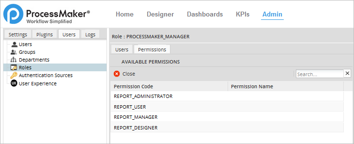
The creation of a report follows a workflow that goes from the moment of generating the data to the moment of report display. This workflow is defined by 4 stages outlined below:

Security Architecture
The Data Reporting Tools plugin has 4 security levels to restrict the access to the information of Report/PM Tables.
Creating a Report
Report / PM Tables
Report Table and PM Tables are created so that data can be easily accessed. As it was mentioned before, the data contained in a report is selected from Report/PM Tables. Therefore, first create the tables that will contain the data that will be represented in the final report.
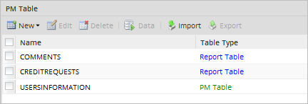
Creating a Report Scope
First, assign the Report Administration permission to the user's role who will be the Report Administrator. When logging in with this user, a new section named Data Reporting Tools will be available with two new options under the Home tab.
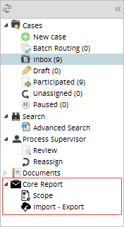
Click on Scope and the list of existent scopes will be displayed. A Report Scope includes the definition of which columns of Report / PM tables can be used to create reports. A Report Administrator can define multiple report scopes.

To create a new scope, first, click on the Create button. In the following steps, the Wizard will guide step-by-step through the process of how to create a query to retrieve data from the tables and to define the data scenario that the Report Designer will use when creating the final reports. First, the "Scope Definition" dialog will be displayed, fill the following fields:

Note: Take into consideration that the information inserted / edited when creating / editing a Scope or a Report is saved when the user makes click on any of the "Next" buttons located on each of the dialog windows.
Once defined the name, click on Next and the "Tables" dialog will be displayed. This step has the following sections:

Once ready, click on Next to assign the Report Users in the next dialog. Only the list of users or/and groups assigned in this section will have access to the final reports.
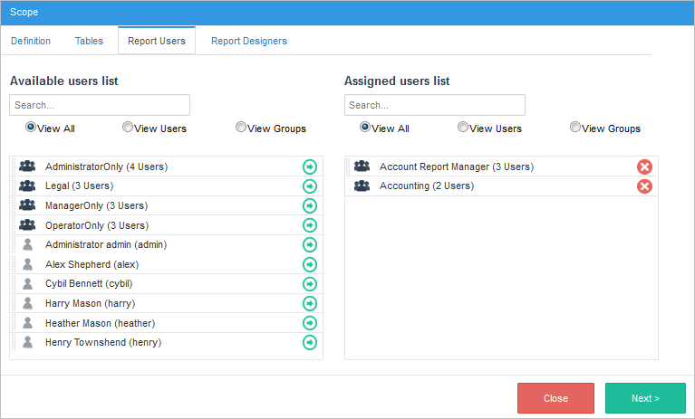
Finally, assign the users that will be Report Designers. Remember that only the users selected in this step will have access to this scope to design the final rports.

Exporting/Importing Scopes
Scopes have the option to be exported and imported from the Import - Export section under the "Data Reporting Tools" menu on the Home tab.
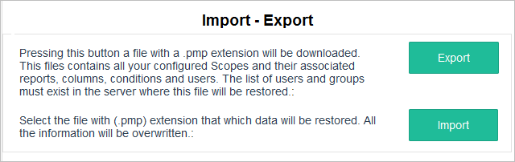
The exporting option stores the configured scopes, columns, conditions, groups of users and it generates a .pmp file. The user has the option to select which scopes, reports and configuration files will be include in the export (.pmp) file. When selecting a specific report, its scope will be automatically selected so inconsistencies between the source and target servers won’t be generated.
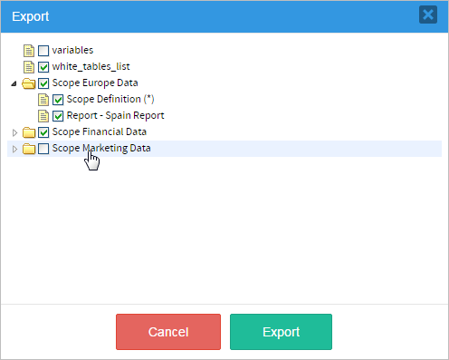
The .pmp file will be downloaded automatically depending in the browser's configuration.
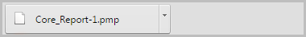
The importing option imports the configuration generated in the previous steps. This include all the users, groups, report scopes and configuration files. For this, click on Browse... and in the open dialog window navigate to your existing .pmp file, click Open and the import process will start.

Remember that the Report Tables and PM Tables associated with the imported scopes must be already imported in the current workspace. Otherwise, the following error message will be displayed.
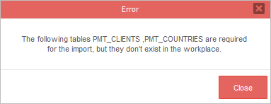
Note: Take into consideration that just as on ProcessMaker, only assigned groups will be included in the exportation. The members of the groups are not exported. Therefore, single users must be assigned again once the Scope is imported.
Report Designing
Once the report scope is created, a Report Design can be created inside the limits of the selected scope. Assign the Report Designer permission to the role of the user that will create the final reports. A new menu option "Report Designer" will become available under the Home tab.
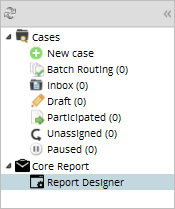
When accessing this new option, a list of the Reports designed by the current Report Designer will be displayed. To create a new report design, click on the "Create" button.

The Report Definition dialog will display. Fill the following fields:
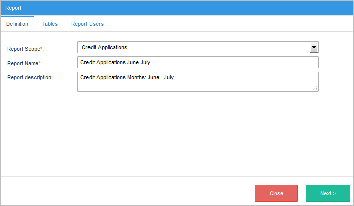
On the next dialog, select and configure the following sections:
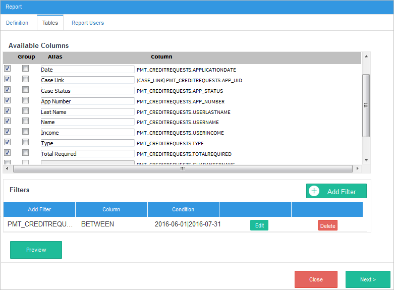
Once the data is defined successfully, in the next dialog select the groups and/or individual users that would be assigned as Report Users from the list at the left. The list of users and groups that the Report Designer can select from is limited by the users and groups defined in the Report Scope.
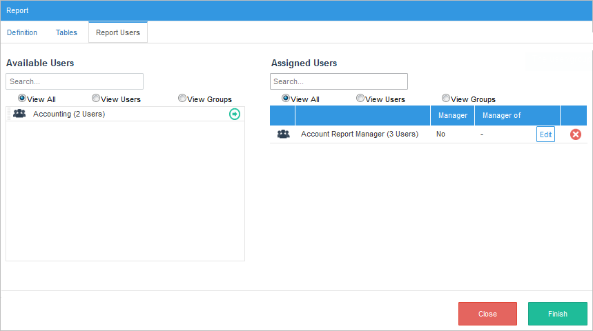
Report Manager
Report Users are able to see the final report but only the information in cases where they have participated. To view additional information, a Report User can be assigned as a Report Manager of a group of users.
A Report Manager is able to view the information provided on the report of the cases where him/her has participated plus all the cases of the group assigned, even if he/she didn't participated in those cases.
To assign a Report User as a Report Manager, make click on the Edit button next to the user assigned in the Report Users section. The following window dialog will be displayed.
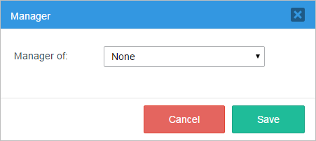
Finally, click the Finish button and the final report created will be shown in the list of Reports.
Report User
Final Reports only can be accessed by the user or groups assigned in the "Report Users" section of the Report Designing process. Login with a user assigned with the "Report User" permission, and a new option "Report User" will be available under the Home tab.
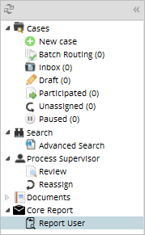
Click the new option and a list of reports will be displayed. Only reports assigned to the current user will be listed in this section. To filter the list of reports, enter a search criteria in the Search Report box at the top-left corner.
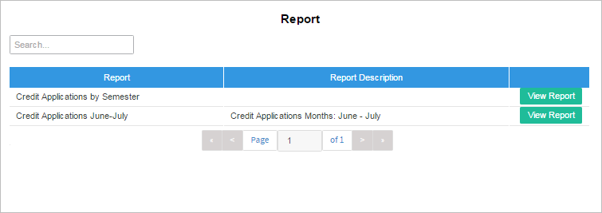
Select one report and click on the View Report button. The report view allows the user to easily apply grouping, sorting and filtering to the report records.
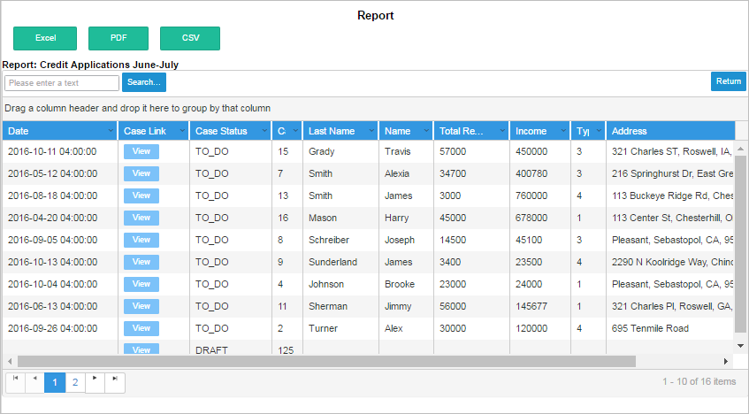